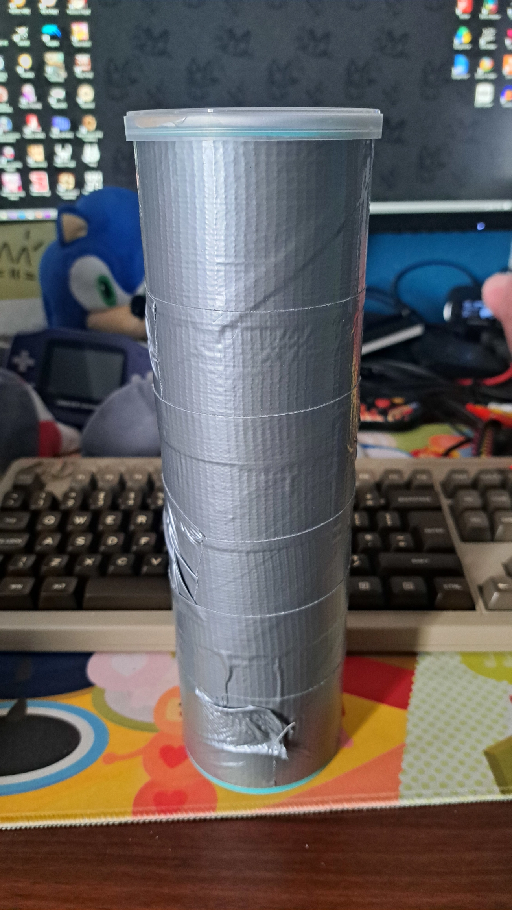
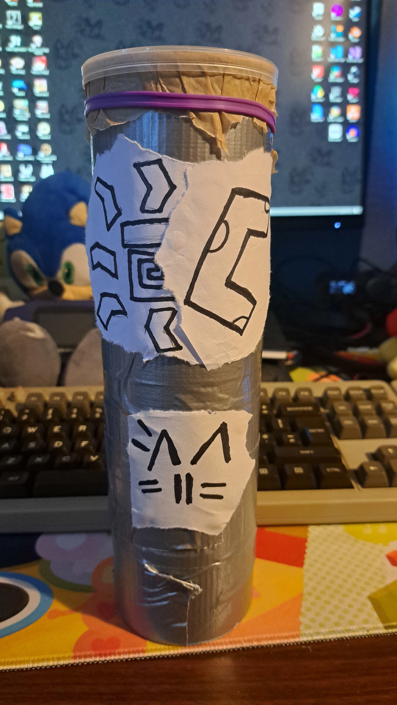
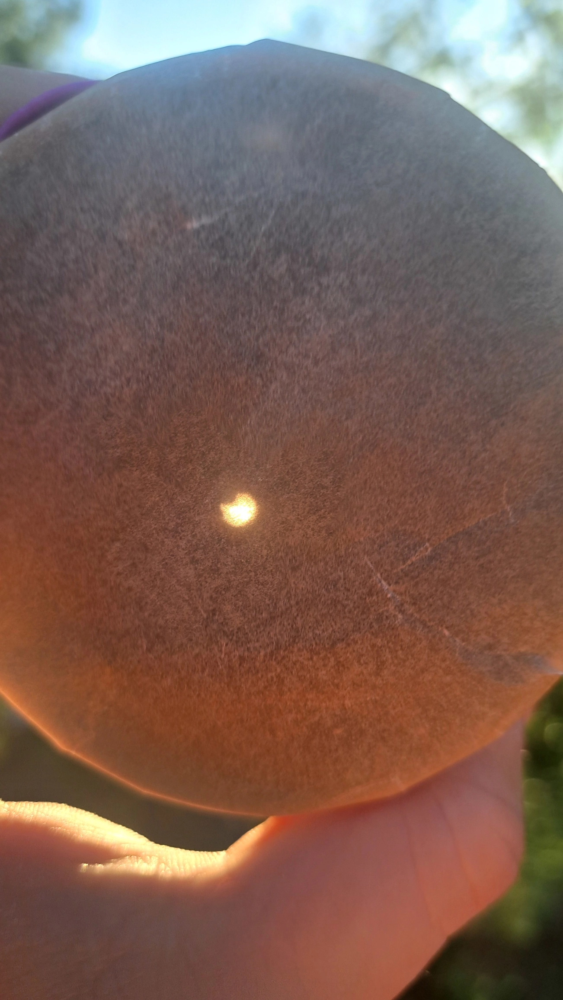
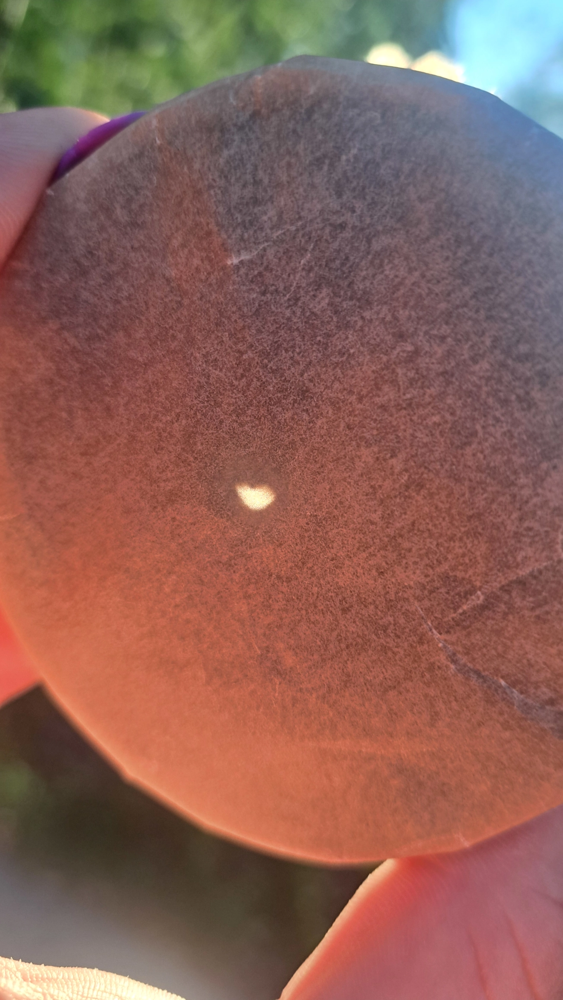
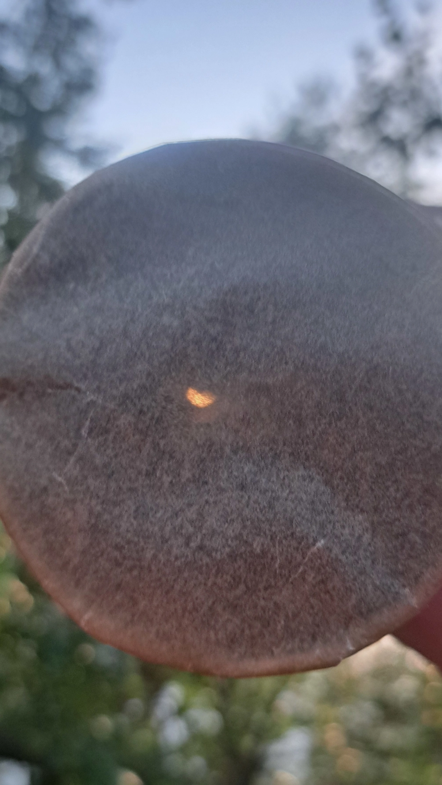

...But the Sun was eclipsed by the Moon
...But the Sun was eclipsed by the Moon
Depending on where you live, you might have already heard it in the news countless of times over the past few days or weeks already. Maybe you'll even have experienced it for yourself !
Yesterday, on the 12th of August 2026, there was a masive solar eclipse with a total eclipse which could be seen in parts of Spain, Portugal, Greenland, Iceland and northern Siberia and a partial eclipse, with coverage of up to 90% of the sun's surface, which could be seen in other countries, like Ireland, the UK, France, Italy, Germany and even in some parts of the US and Canada !
A total solar eclipse (or at least near total from where i live) truly is something really special ! You don't really get to witness solar eclipses that often in your life ! Especially not ones where it almost covers the entirety of the surface of the sun !
I must admit, i actually didn't really care about it that much at first and i genuinely don't know why ! It wasn't until i got home from work yesterday where i then thought to myself: "Oh wait actually i do want to see it what the heck is wrong with me". And with only four hours to prepare i had to come up with a plan quick ! At this point i already knew that trying to get my hands on a pair of solar eclipse glasses would be near impossible !
Enter: The Pringles Can Camera Obscura Doohickey™



Basically it's just a long cylinder with a very small hole on one end and a thin piece of baking paper on the other. One of my teachers actually introduced me to this method of spectating a solar eclipse when i was still in middle school !
I just took an empty Pringles can, wraped a bunch of duct tape around it and glued a piece of black construction paper on the inside of the can. I then took the smallest needle i could find and poked a hole into the bottom of the can and then wraped a piece of baking paper over the can opening and straped it down with a rubber band.
You should then have something that looks similar to what i made ! As a final touch i've even decorated mine with a few sketches !
How this works is you would hold it against a light source (in this case the sun !) and the light, which would pass through the small hole on the end of the cylinder, would be projected on the piece of backing paper !
And it worked suprisingly well ! Sure the projection wasn't exactly large and using actual eclipse sun glasses will probably always be the best way to view a solar eclipse, but it works quite well in a pinch !



The peak of the solar eclipse arrived at around 8pm in my time zone. Once the peak hit, you really noticed how it got darker and also a bit colder ! It was a fascinating experience for sure ! But it's also something you'd generally expect, when the moon blocks off large parts of the sun !
Fun sidenote: I actually managed to grab the attention of two complete strangers who also wanted to see the solar eclipse but didn't have any glasses or camera filters on hand.
Usually i'm TERRIBLE with strangers ! I've been having problems communicating with other people basically my entire life. But the interaction i had with those two just... clicked for some reason ?!
It was an oddly magical moment and a beautiful reminder that such an event on a global scale brings people together !
After all: We all live under the same sun and moon !
Please keep this in mind.